EDA - Exploratory Data Analysis#
Importar Librerías#
Se importan las librerías esenciales para facilitar el análisis que abarca la carga de datos, la evaluación estadística, la visualización, la transformación de datos, la fusión y la unión.
import warnings
import pandas as pd
import numpy as np
import matplotlib.pyplot as plt
import seaborn as sns
from sklearn.pipeline import Pipeline
from sklearn.compose import ColumnTransformer
from sklearn.preprocessing import OneHotEncoder, StandardScaler
from sklearn.linear_model import LogisticRegression
from sklearn.model_selection import GridSearchCV, train_test_split
from sklearn.model_selection import StratifiedKFold
from sklearn.metrics import confusion_matrix, accuracy_score, precision_score, recall_score, f1_score, roc_curve, auc
warnings.filterwarnings("ignore")
Se Instala el paquete ucimlrepo desde PyPI (Python Package Index).
Este paquete permite acceder a datasets del repositorio UCI Machine Learning.
pip install ucimlrepo
Requirement already satisfied: ucimlrepo in c:\users\david\miniconda3\envs\ml_venv\lib\site-packages (0.0.7)Note: you may need to restart the kernel to use updated packages.
Requirement already satisfied: pandas>=1.0.0 in c:\users\david\miniconda3\envs\ml_venv\lib\site-packages (from ucimlrepo) (2.3.1)
Requirement already satisfied: certifi>=2020.12.5 in c:\users\david\miniconda3\envs\ml_venv\lib\site-packages (from ucimlrepo) (2023.7.22)
Requirement already satisfied: numpy>=1.22.4 in c:\users\david\miniconda3\envs\ml_venv\lib\site-packages (from pandas>=1.0.0->ucimlrepo) (1.25.2)
Requirement already satisfied: python-dateutil>=2.8.2 in c:\users\david\miniconda3\envs\ml_venv\lib\site-packages (from pandas>=1.0.0->ucimlrepo) (2.8.2)
Requirement already satisfied: pytz>=2020.1 in c:\users\david\miniconda3\envs\ml_venv\lib\site-packages (from pandas>=1.0.0->ucimlrepo) (2023.3)
Requirement already satisfied: tzdata>=2022.7 in c:\users\david\miniconda3\envs\ml_venv\lib\site-packages (from pandas>=1.0.0->ucimlrepo) (2023.3)
Requirement already satisfied: six>=1.5 in c:\users\david\miniconda3\envs\ml_venv\lib\site-packages (from python-dateutil>=2.8.2->pandas>=1.0.0->ucimlrepo) (1.16.0)
Lectura de Datos#
Se Importa la función fetch_ucirepo del paquete ucimlrepo.
fetch_ucirepo es la función clave para descargar datasets usando su ID único.
from ucimlrepo import fetch_ucirepo
# fetch dataset
cdc_diabetes_health_indicators = fetch_ucirepo(id=891)
# data (as pandas dataframes)
X = cdc_diabetes_health_indicators.data.features
y = cdc_diabetes_health_indicators.data.targets
# metadata
print(cdc_diabetes_health_indicators.metadata)
# Se X e y (ambos son DataFrames)
df = pd.concat([X, y], axis=1)
---------------------------------------------------------------------------
KeyboardInterrupt Traceback (most recent call last)
Cell In[3], line 4
1 from ucimlrepo import fetch_ucirepo
3 # fetch dataset
----> 4 cdc_diabetes_health_indicators = fetch_ucirepo(id=891)
6 # data (as pandas dataframes)
7 X = cdc_diabetes_health_indicators.data.features
File ~\miniconda3\envs\ml_venv\lib\site-packages\ucimlrepo\fetch.py:97, in fetch_ucirepo(name, id)
95 df = None
96 try:
---> 97 df = pd.read_csv(data_url)
98 except (urllib.error.URLError, urllib.error.HTTPError):
99 raise DatasetNotFoundError('Error reading data csv file for "{}" dataset (id={}).'.format(name, id))
File ~\miniconda3\envs\ml_venv\lib\site-packages\pandas\io\parsers\readers.py:1026, in read_csv(filepath_or_buffer, sep, delimiter, header, names, index_col, usecols, dtype, engine, converters, true_values, false_values, skipinitialspace, skiprows, skipfooter, nrows, na_values, keep_default_na, na_filter, verbose, skip_blank_lines, parse_dates, infer_datetime_format, keep_date_col, date_parser, date_format, dayfirst, cache_dates, iterator, chunksize, compression, thousands, decimal, lineterminator, quotechar, quoting, doublequote, escapechar, comment, encoding, encoding_errors, dialect, on_bad_lines, delim_whitespace, low_memory, memory_map, float_precision, storage_options, dtype_backend)
1013 kwds_defaults = _refine_defaults_read(
1014 dialect,
1015 delimiter,
(...)
1022 dtype_backend=dtype_backend,
1023 )
1024 kwds.update(kwds_defaults)
-> 1026 return _read(filepath_or_buffer, kwds)
File ~\miniconda3\envs\ml_venv\lib\site-packages\pandas\io\parsers\readers.py:620, in _read(filepath_or_buffer, kwds)
617 _validate_names(kwds.get("names", None))
619 # Create the parser.
--> 620 parser = TextFileReader(filepath_or_buffer, **kwds)
622 if chunksize or iterator:
623 return parser
File ~\miniconda3\envs\ml_venv\lib\site-packages\pandas\io\parsers\readers.py:1620, in TextFileReader.__init__(self, f, engine, **kwds)
1617 self.options["has_index_names"] = kwds["has_index_names"]
1619 self.handles: IOHandles | None = None
-> 1620 self._engine = self._make_engine(f, self.engine)
File ~\miniconda3\envs\ml_venv\lib\site-packages\pandas\io\parsers\readers.py:1880, in TextFileReader._make_engine(self, f, engine)
1878 if "b" not in mode:
1879 mode += "b"
-> 1880 self.handles = get_handle(
1881 f,
1882 mode,
1883 encoding=self.options.get("encoding", None),
1884 compression=self.options.get("compression", None),
1885 memory_map=self.options.get("memory_map", False),
1886 is_text=is_text,
1887 errors=self.options.get("encoding_errors", "strict"),
1888 storage_options=self.options.get("storage_options", None),
1889 )
1890 assert self.handles is not None
1891 f = self.handles.handle
File ~\miniconda3\envs\ml_venv\lib\site-packages\pandas\io\common.py:728, in get_handle(path_or_buf, mode, encoding, compression, memory_map, is_text, errors, storage_options)
725 codecs.lookup_error(errors)
727 # open URLs
--> 728 ioargs = _get_filepath_or_buffer(
729 path_or_buf,
730 encoding=encoding,
731 compression=compression,
732 mode=mode,
733 storage_options=storage_options,
734 )
736 handle = ioargs.filepath_or_buffer
737 handles: list[BaseBuffer]
File ~\miniconda3\envs\ml_venv\lib\site-packages\pandas\io\common.py:389, in _get_filepath_or_buffer(filepath_or_buffer, encoding, compression, mode, storage_options)
386 if content_encoding == "gzip":
387 # Override compression based on Content-Encoding header
388 compression = {"method": "gzip"}
--> 389 reader = BytesIO(req.read())
390 return IOArgs(
391 filepath_or_buffer=reader,
392 encoding=encoding,
(...)
395 mode=fsspec_mode,
396 )
398 if is_fsspec_url(filepath_or_buffer):
File ~\miniconda3\envs\ml_venv\lib\http\client.py:470, in HTTPResponse.read(self, amt)
465 else:
466 # Amount is not given (unbounded read) so we must check self.length
467 # and self.chunked
469 if self.chunked:
--> 470 return self._readall_chunked()
472 if self.length is None:
473 s = self.fp.read()
File ~\miniconda3\envs\ml_venv\lib\http\client.py:577, in HTTPResponse._readall_chunked(self)
575 try:
576 while True:
--> 577 chunk_left = self._get_chunk_left()
578 if chunk_left is None:
579 break
File ~\miniconda3\envs\ml_venv\lib\http\client.py:560, in HTTPResponse._get_chunk_left(self)
558 self._safe_read(2) # toss the CRLF at the end of the chunk
559 try:
--> 560 chunk_left = self._read_next_chunk_size()
561 except ValueError:
562 raise IncompleteRead(b'')
File ~\miniconda3\envs\ml_venv\lib\http\client.py:520, in HTTPResponse._read_next_chunk_size(self)
518 def _read_next_chunk_size(self):
519 # Read the next chunk size from the file
--> 520 line = self.fp.readline(_MAXLINE + 1)
521 if len(line) > _MAXLINE:
522 raise LineTooLong("chunk size")
File ~\miniconda3\envs\ml_venv\lib\socket.py:716, in SocketIO.readinto(self, b)
714 while True:
715 try:
--> 716 return self._sock.recv_into(b)
717 except timeout:
718 self._timeout_occurred = True
File ~\miniconda3\envs\ml_venv\lib\ssl.py:1275, in SSLSocket.recv_into(self, buffer, nbytes, flags)
1271 if flags != 0:
1272 raise ValueError(
1273 "non-zero flags not allowed in calls to recv_into() on %s" %
1274 self.__class__)
-> 1275 return self.read(nbytes, buffer)
1276 else:
1277 return super().recv_into(buffer, nbytes, flags)
File ~\miniconda3\envs\ml_venv\lib\ssl.py:1133, in SSLSocket.read(self, len, buffer)
1131 try:
1132 if buffer is not None:
-> 1133 return self._sslobj.read(len, buffer)
1134 else:
1135 return self._sslobj.read(len)
KeyboardInterrupt:
Se muestran las primeras filas del DataFrame con todos los detalles.
Se usa .to_string() para evitar el truncamiento de columnas y lograr mostrar todas las variables.
print(df.head().to_string())
HighBP HighChol CholCheck BMI Smoker Stroke HeartDiseaseorAttack PhysActivity Fruits Veggies HvyAlcoholConsump AnyHealthcare NoDocbcCost GenHlth MentHlth PhysHlth DiffWalk Sex Age Education Income Diabetes_binary
0 1 1 1 40 1 0 0 0 0 1 0 1 0 5 18 15 1 0 9 4 3 0
1 0 0 0 25 1 0 0 1 0 0 0 0 1 3 0 0 0 0 7 6 1 0
2 1 1 1 28 0 0 0 0 1 0 0 1 1 5 30 30 1 0 9 4 8 0
3 1 0 1 27 0 0 0 1 1 1 0 1 0 2 0 0 0 0 11 3 6 0
4 1 1 1 24 0 0 0 1 1 1 0 1 0 2 3 0 0 0 11 5 4 0
Se muestran las últimas filas del DataFrame con todos los detalles.
Se usa .to_string() para evitar el truncamiento de columnas y lograr mostrar todas las variables.
print(df.tail().to_string())
HighBP HighChol CholCheck BMI Smoker Stroke HeartDiseaseorAttack PhysActivity Fruits Veggies HvyAlcoholConsump AnyHealthcare NoDocbcCost GenHlth MentHlth PhysHlth DiffWalk Sex Age Education Income Diabetes_binary
253675 1 1 1 45 0 0 0 0 1 1 0 1 0 3 0 5 0 1 5 6 7 0
253676 1 1 1 18 0 0 0 0 0 0 0 1 0 4 0 0 1 0 11 2 4 1
253677 0 0 1 28 0 0 0 1 1 0 0 1 0 1 0 0 0 0 2 5 2 0
253678 1 0 1 23 0 0 0 0 1 1 0 1 0 3 0 0 0 1 7 5 1 0
253679 1 1 1 25 0 0 1 1 1 0 0 1 0 2 0 0 0 0 9 6 2 1
Se presenta un resumen detallado de todas las variables del dataset, incluyendo su rol (predictora o objetivo), el tipo de dato (numérico, categórico, binario) y la identificación de valores faltantes, lo que permite evaluar la integridad y estructura de los datos para su posterior procesamiento.
print(cdc_diabetes_health_indicators.variables)
name role type demographic \
0 ID ID Integer None
1 Diabetes_binary Target Binary None
2 HighBP Feature Binary None
3 HighChol Feature Binary None
4 CholCheck Feature Binary None
5 BMI Feature Integer None
6 Smoker Feature Binary None
7 Stroke Feature Binary None
8 HeartDiseaseorAttack Feature Binary None
9 PhysActivity Feature Binary None
10 Fruits Feature Binary None
11 Veggies Feature Binary None
12 HvyAlcoholConsump Feature Binary None
13 AnyHealthcare Feature Binary None
14 NoDocbcCost Feature Binary None
15 GenHlth Feature Integer None
16 MentHlth Feature Integer None
17 PhysHlth Feature Integer None
18 DiffWalk Feature Binary None
19 Sex Feature Binary Sex
20 Age Feature Integer Age
21 Education Feature Integer Education Level
22 Income Feature Integer Income
description units missing_values
0 Patient ID None no
1 0 = no diabetes 1 = prediabetes or diabetes None no
2 0 = no high BP 1 = high BP None no
3 0 = no high cholesterol 1 = high cholesterol None no
4 0 = no cholesterol check in 5 years 1 = yes ch... None no
5 Body Mass Index None no
6 Have you smoked at least 100 cigarettes in you... None no
7 (Ever told) you had a stroke. 0 = no 1 = yes None no
8 coronary heart disease (CHD) or myocardial inf... None no
9 physical activity in past 30 days - not includ... None no
10 Consume Fruit 1 or more times per day 0 = no 1... None no
11 Consume Vegetables 1 or more times per day 0 =... None no
12 Heavy drinkers (adult men having more than 14 ... None no
13 Have any kind of health care coverage, includi... None no
14 Was there a time in the past 12 months when yo... None no
15 Would you say that in general your health is: ... None no
16 Now thinking about your mental health, which i... None no
17 Now thinking about your physical health, which... None no
18 Do you have serious difficulty walking or clim... None no
19 0 = female 1 = male None no
20 13-level age category (_AGEG5YR see codebook) ... None no
21 Education level (EDUCA see codebook) scale 1-6... None no
22 Income scale (INCOME2 see codebook) scale 1-8 ... None no
Interpretación del Dataset:
Este conjunto de datos contiene información relacionada con factores de salud y demográficos asociados a la diabetes. La variable objetivo (Diabetes_binary) indica si un paciente tiene diabetes o prediabetes (1) o no (0). Entre las características destacan variables binarias como HighBP (hipertensión), HighChol (colesterol alto) y Smoker (fumador), que representan condiciones médicas o hábitos relevantes. También se incluyen variables numéricas como BMI (índice de masa corporal) y escalas de salud general (GenHlth, MentHlth, PhysHlth), que miden percepciones y estados de salud física y mental. Además, hay atributos demográficos como Sex (sexo), Age (edad), Education (nivel educativo) e Income (ingresos), que permiten analizar patrones según grupos poblacionales. La ausencia de valores faltantes facilita el análisis, y las descripciones detalladas de cada campo ayudan a contextualizar su relevancia clínica.
Se calcula el número de valores únicos para cada variable del DataFrame.
df.nunique()
HighBP 2
HighChol 2
CholCheck 2
BMI 84
Smoker 2
Stroke 2
HeartDiseaseorAttack 2
PhysActivity 2
Fruits 2
Veggies 2
HvyAlcoholConsump 2
AnyHealthcare 2
NoDocbcCost 2
GenHlth 5
MentHlth 31
PhysHlth 31
DiffWalk 2
Sex 2
Age 13
Education 6
Income 8
Diabetes_binary 2
dtype: int64
Interpretación del Conteo de Valores Únicos:
El análisis de valores únicos revela una estructura clara y consistente con la naturaleza de las variables descritas. Las variables binarias muestran exactamente 2 valores únicos (0 y 1), confirmando su correcta codificación como indicadores binarios de presencia/ausencia de condiciones médicas, hábitos o características demográficas. Las variables numéricas muestran mayor dispersión: BMI presenta 84 valores únicos, reflejando la diversidad esperada en índices de masa corporal, mientras que MentHlth y PhysHlth muestran 31 valores cada una (correspondiendo a los posibles días de afectación de salud en un mes). Estos resultados validan la integridad del conjunto de datos y confirman que todas las variables mantienen los rangos y categorías esperados según su descripción.
Análisis Univariado#
El Análisis Univariado es la primera fase del análisis exploratorio de datos. Se enfoca en el estudio individual de cada variable para entender su distribución, características y valores atípicos. Esto permite identificar patrones y la calidad de los datos antes de un análisis más complejo.
Variables Binarias#
Se identifican y analizan las variables binarias (aquellas con solo 2 valores únicos) en el DataFrame.
Mostrando:
Conteo absoluto de ocurrencias para cada valor (0 y 1).
Porcentaje respecto al total (redondeado a 1 decimal).
# Filtrar variables binarias
binarias = [col for col in df.columns if df[col].nunique() == 2]
# Calcular proporciones y crear DataFrame
data = {
col: [
f"{df[col].value_counts().get(0, 0)} ({round(df[col].value_counts(normalize=True).get(0, 0)*100, 1)}%)", # No (0)
f"{df[col].value_counts().get(1, 0)} ({round(df[col].value_counts(normalize=True).get(1, 0)*100, 1)}%)" # Sí (1)
] for col in binarias
}
tabla_porcentajes = pd.DataFrame(data, index=['No (0)', 'Si (1)'])
display(tabla_porcentajes)
| HighBP | HighChol | CholCheck | Smoker | Stroke | HeartDiseaseorAttack | PhysActivity | Fruits | Veggies | HvyAlcoholConsump | AnyHealthcare | NoDocbcCost | DiffWalk | Sex | Diabetes_binary | |
|---|---|---|---|---|---|---|---|---|---|---|---|---|---|---|---|
| No (0) | 144851 (57.1%) | 146089 (57.6%) | 9470 (3.7%) | 141257 (55.7%) | 243388 (95.9%) | 229787 (90.6%) | 61760 (24.3%) | 92782 (36.6%) | 47839 (18.9%) | 239424 (94.4%) | 12417 (4.9%) | 232326 (91.6%) | 211005 (83.2%) | 141974 (56.0%) | 218334 (86.1%) |
| Si (1) | 108829 (42.9%) | 107591 (42.4%) | 244210 (96.3%) | 112423 (44.3%) | 10292 (4.1%) | 23893 (9.4%) | 191920 (75.7%) | 160898 (63.4%) | 205841 (81.1%) | 14256 (5.6%) | 241263 (95.1%) | 21354 (8.4%) | 42675 (16.8%) | 111706 (44.0%) | 35346 (13.9%) |
Se genera un doble gráfico para cada variable binaria, permitiendo comparar su distribución mediante:
Gráfico de Barras:
Muestra el conteo absoluto de cada categoría (0 y 1).
Ideal para comparar magnitudes visualmente.
Gráfico de Torta:
Muestra la proporción porcentual de cada categoría.
Útil para entender el balance/imbalance entre clases.
sns.set(font_scale=1.4)
for col in binarias:
print('Column:', col)
plt.figure(figsize=(16, 7))
# Definir el orden y los colores consistentes
value_order = sorted(df[col].unique())
colors = sns.color_palette('pastel') # Misma paleta para ambos gráficos
# Primer subplot - Gráfico de barras
plt.subplot(1, 2, 1)
ax = sns.countplot(x=df[col], palette=colors, order=value_order)
plt.title(f'Conteo de {col}')
# Añadir los valores encima de las barras
for container in ax.containers:
ax.bar_label(container, fmt='%d', label_type='edge', padding=3)
# Segundo subplot - Diagrama de torta
plt.subplot(1, 2, 2)
counts = df[col].value_counts().loc[value_order] # Ordenar los conteos
plt.pie(counts,
labels=counts.index,
autopct='%1.1f%%',
colors=colors) # Usar la misma paleta ordenada
plt.title(f'Distribución de {col}')
plt.tight_layout()
plt.show()
Column: HighBP
Column: HighChol
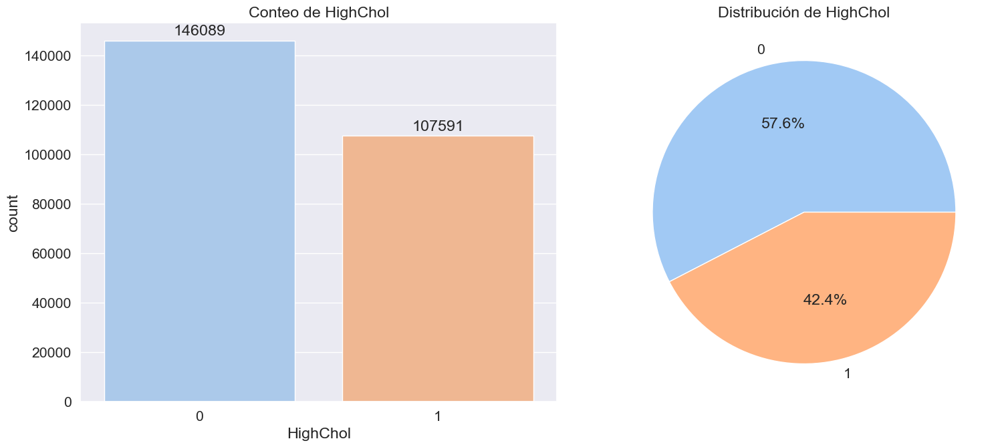
Column: CholCheck
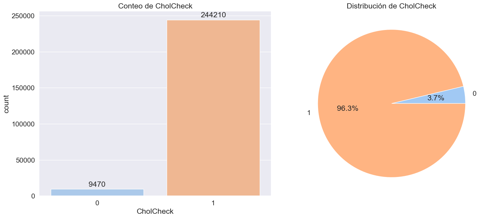
Column: Smoker
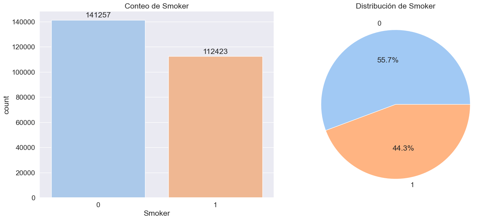
Column: Stroke
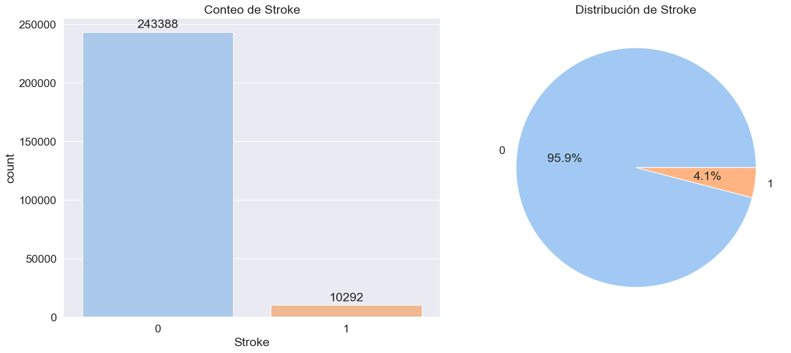
Column: HeartDiseaseorAttack
Column: PhysActivity
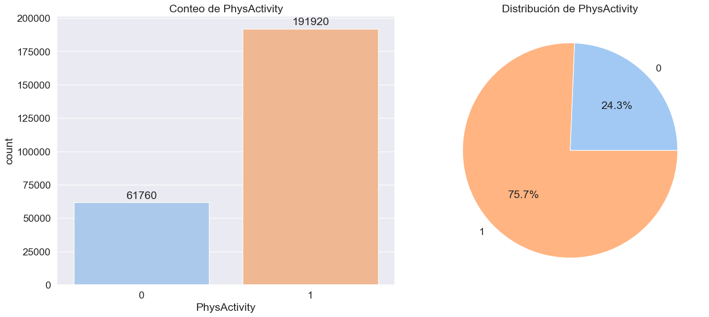
Column: Fruits
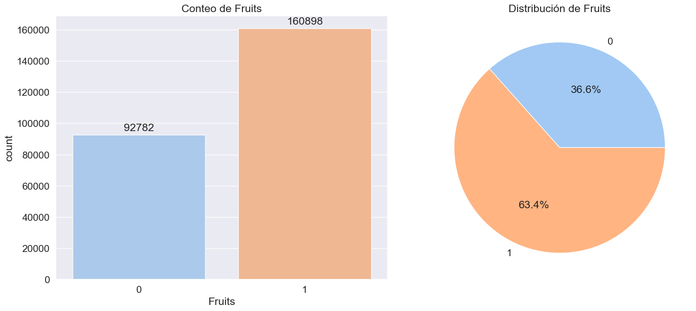
Column: Veggies
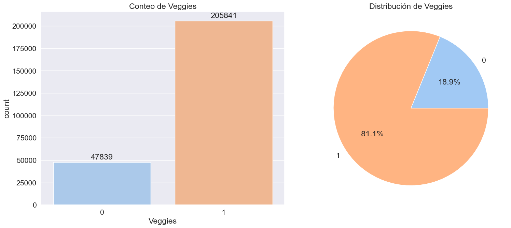
Column: HvyAlcoholConsump
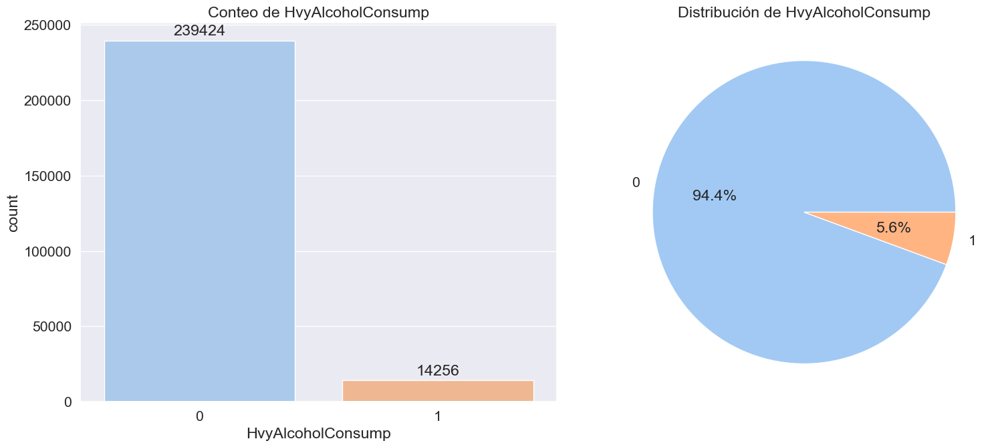
Column: AnyHealthcare
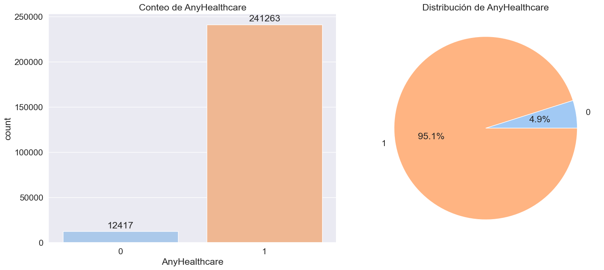
Column: NoDocbcCost
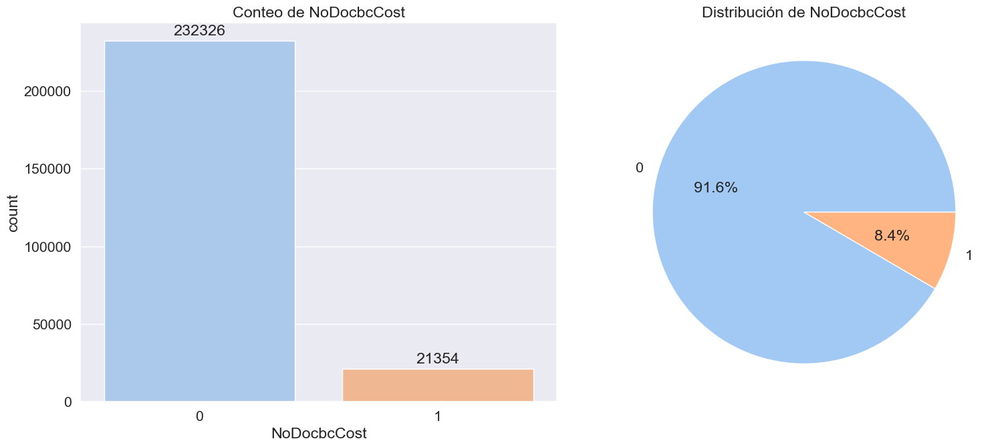
Column: DiffWalk
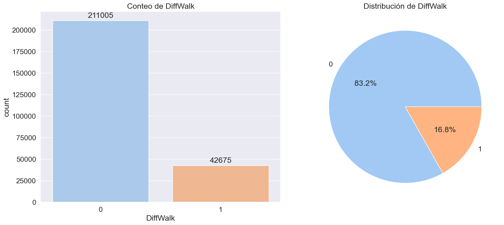
Column: Sex
Column: Diabetes_binary
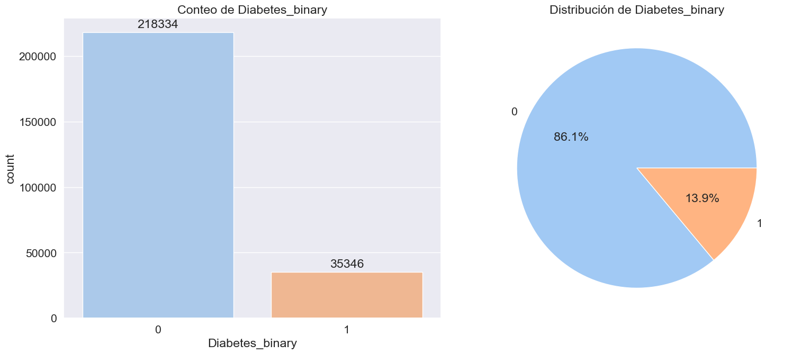
Interpretación de Variables Binarias:
El análisis de las proporciones revela un marcado desbalance en varias variables binarias, lo que tiene implicaciones importantes para el análisis y modelado:
Variables con Distribución Relativamente Equilibrada: Algunas características como
HighBP(42.9% positivos) yHighChol(42.4% positivos) presentan una distribución cercana al equilibrio, lo que facilita su análisis sin necesidad de ajustes especiales. Esto sugiere que estas condiciones son comunes en la población estudiada, lo que podría reflejar factores de riesgo prevalentes en el perfil demográfico de la muestra.Desbalance Moderado: Variables como
Fruits(36.6% negativos) yVeggies(18.9% negativos) muestran un desbalance moderado. Aunque no son extremos, estos casos podrían beneficiarse de técnicas en modelos predictivos para asegurar que la clase minoritaria tenga suficiente representación en las predicciones.Desbalance Extremo: En contraste, variables como
Stroke(4.1% positivos),HvyAlcoholConsump(5.6% positivos) e incluso la variable objetivoDiabetes_binarypresentan un desbalance pronunciado, donde la clase positiva es significativamente menor. Esto implica riesgos como:Sesgo en Modelos: Los algoritmos podrían ignorar la clase minoritaria al optimizar la precisión global, subestimando patrones críticos.
Sobreajuste: Con tan pocos casos positivos, el modelo podría memorizar ruido en lugar de aprender relaciones generalizables.
Variables Categóricas#
Se generan gráficos de barras para visualizar la distribución de cada variable categórica. Cada gráfico muestra:
El número absoluto de observaciones (conteo).
El porcentaje relativo respecto al total.
Las categorías ordenadas según su escala natural.
categoricas = ['GenHlth', 'Age', 'Education', 'Income']
sns.set(font_scale=1.4)
for col in categoricas:
print('Column:', col)
plt.figure(figsize=(16, 7))
# Obtener el orden de las categorías según el diccionario
value_order = sorted(df[col].unique())
# Crear el gráfico de barras ordenado
ax = sns.countplot(x=df[col], order=value_order, palette='pastel')
for p in ax.patches:
count = int(p.get_height())
percent = 100 * p.get_height() / len(df[col])
ax.annotate(f'{count}\n({percent:.1f}%)',
(p.get_x() + p.get_width()/2., p.get_height()),
ha='center', va='center',
xytext=(0, 5),
textcoords='offset points',
fontsize=13)
plt.title(f'Conteo y porcentaje de {col}')
plt.tight_layout()
plt.show()
Column: GenHlth
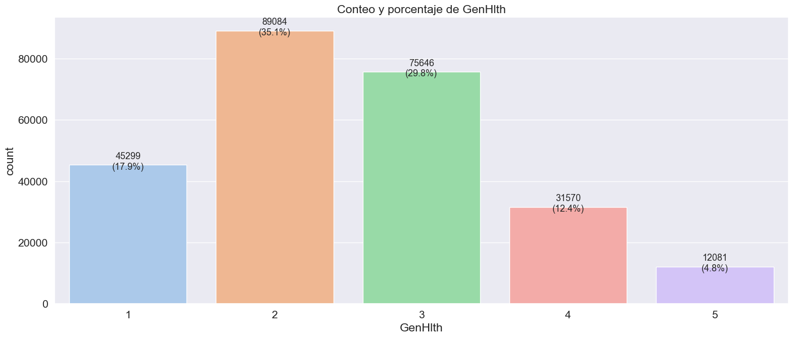
Column: Age
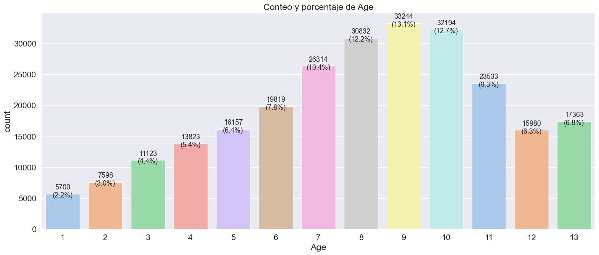
Column: Education
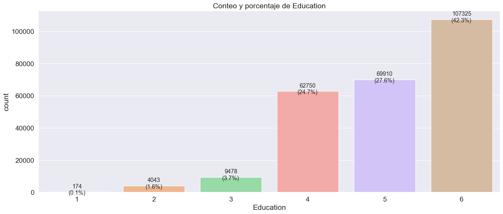
Column: Income
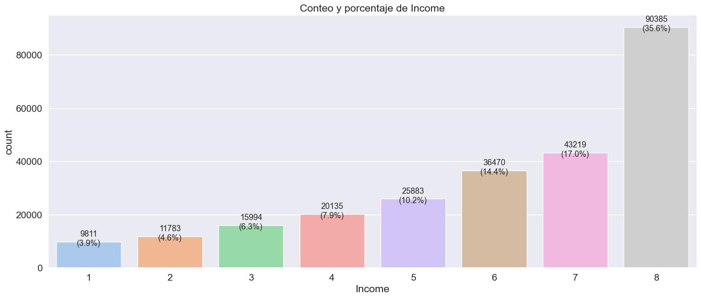
Interpretación de Variables Categóricas:
El análisis de las distribuciones revela patrones demográficos y socioeconómicos clave en la población estudiada:
GenHlthLa distribución muestra una tendencia hacia percepciones positivas de salud: el 53.0% de los encuestados reporta salud “muy buena” (35.1%) o “excelente” (17.9%), mientras solo el 4.8% la califica como “pobre”.AgeSe observa una concentración alta en edades entre 50 y 69 años (grupos 7 a 10), lo cual sugiere que la mayoría de los participantes o casos en este conjunto de datos son personas de mediana edad a adultos mayores. Los grupos con menor representación son:18–24 años (grupo 1): 5,700 personas (2.2%).
25–29 años (grupo 2): 7,598 personas (3.0%), Esto indica que hay menos jóvenes en el conjunto de datos, posiblemente porque se trata de una muestra relacionada con condiciones de salud que afectan más a personas mayores.
EducationSe observa una marcada sobrerrepresentación de educación superior: el 42.3% corresponde a graduados universitarios (categoría 6), seguido por “algo de universidad” (27.6%). Esto se evidencia al compararlo con el 0.1%, 1.6% y 3.7% de las categorias 1, 2 y 3 respectivamente. Este perfil sugiere un sesgo de selección hacia población con mayor acceso a educación, lo que podría limitar la generalización de hallazgos a grupos menos educados.IncomeLa distribución económica muestra una concentración en la clase media-alta: el 35.6% pertenece a la categoría más alta, seguido por la segunda categoría mas alta con 17%. Esta estructura, combinada con los datos educativos, refuerza la hipótesis de que la muestra subrepresenta poblaciones vulnerables.
Variables Númericas#
Se genera una tabla para visualizar algunos estadísticos descriptivos para las variables númericas.
df[['MentHlth', 'PhysHlth','BMI']].describe().T
| count | mean | std | min | 25% | 50% | 75% | max | |
|---|---|---|---|---|---|---|---|---|
| MentHlth | 253680.0 | 3.184772 | 7.412847 | 0.0 | 0.0 | 0.0 | 2.0 | 30.0 |
| PhysHlth | 253680.0 | 4.242081 | 8.717951 | 0.0 | 0.0 | 0.0 | 3.0 | 30.0 |
| BMI | 253680.0 | 28.382364 | 6.608694 | 12.0 | 24.0 | 27.0 | 31.0 | 98.0 |
Interpretación de Variables Númericas:
MentHlth: Los participantes reportaron un promedio de 3.18 días con salud mental afectada en los últimos 30 días. Con una desviación estándar de 7.41 días, indicando una variabilidad moderada en las respuestas.PhysHlth: El promedio fue ligeramente mayor (4.24 días), sugiriendo que los problemas físicos son más frecuentes que los mentales en esta muestra. Con una dispersión mayor (desviación estándar de 8.72 días), lo que sugiere que los problemas físicos muestran mayor variabilidad entre los individuos.
Ambas variables comparten un patrón similar en los percentiles:
25% inferior: 0 días de afectación.
Mediana (50%): 0 días.
75% superior: 2 días para salud mental y 3 días para salud física.
Este patrón revela que la mayoría de la población (al menos 50%) no reportó días con problemas de salud.
BMI: El Índice de Masa Corporal (BMI) muestra una media de 28.38 y una desviación estándar de 6.61, indicando que la mayoría de los valores se agrupan alrededor de 28.38, con una dispersión moderada. La distribución está sesgada hacia valores más altos.Mediana (50%): 27.0 < Media (28.38), lo que sugiere una cola derecha (presencia de valores atípicos altos).
Rango intercuartílico (IQR): 7.0 (Q3-Q1 = 31.0 - 24.0), capturando el 50% central de los datos.
Valores extremos: El mínimo (12.0) y máximo (98.0) son atípicos, especialmente el máximo (98.0), que está muy alejado del percentil 75% (31.0).
Se genera un histograma y un boxplot para visualizar la distribución de frecuencias e identificar outliers (puntos fuera de los bigotes) y la dispersión de los datos. Además se evalua:
Asimetría:
skew = 0: Distribución simétrica (valores aceptables skew \(\in (-1,1)\)).skew > 0: Mayor peso en la cola izquierda de la distribución (sesgo positivo).skew < 0: Mayor peso en la cola derecha de la distribución (sesgo negativo).
Kurtosis: Determina si una distribución tiene colas gruesas con respecto a la distribución normal. Proporciona información sobre la forma de una distribución de frecuencias.
kurtosis = 3: se denomina mesocúrtica (distribución normal).kurtosis < 3: se denomina platicúrtica (distribución con colas menos gruesas que la normal).kurtosis > 3: se denomina leptocúrtica (distribución con colas más gruesas que la normal) y significa que trata de producir más valores atípicos que la distribución normal.
numericas = ['MentHlth', 'PhysHlth', 'BMI']
from scipy.stats import kurtosis
sns.set(font_scale=1.4)
for col in numericas:
print('Column:', col)
plt.figure(figsize=(16, 7))
print('Skew:', round(df[col].skew(), 2))
print('Kurtosis: ', round(df[col].kurtosis(), 2))
plt.figure(figsize = (16, 7))
plt.subplot(1, 2, 1)
df[col].hist(grid=False)
plt.title(f'Distribución de {col}')
plt.subplot(1, 2, 2)
sns.boxplot(x=df[col])
plt.title(f'Distribución de {col}')
plt.tight_layout()
plt.show()
Column: MentHlth
Skew: 2.72
Kurtosis: 6.44
<Figure size 1600x700 with 0 Axes>
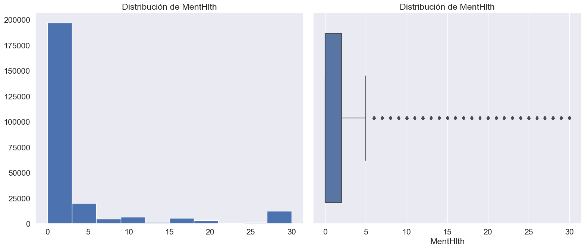
Column: PhysHlth
Skew: 2.21
Kurtosis: 3.5
<Figure size 1600x700 with 0 Axes>
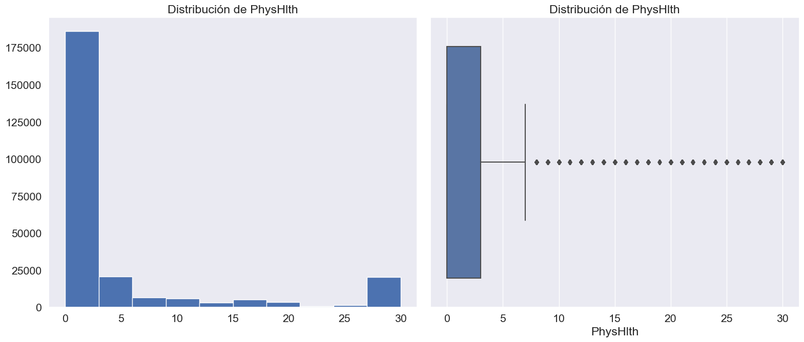
Column: BMI
Skew: 2.12
Kurtosis: 11.0
<Figure size 1600x700 with 0 Axes>
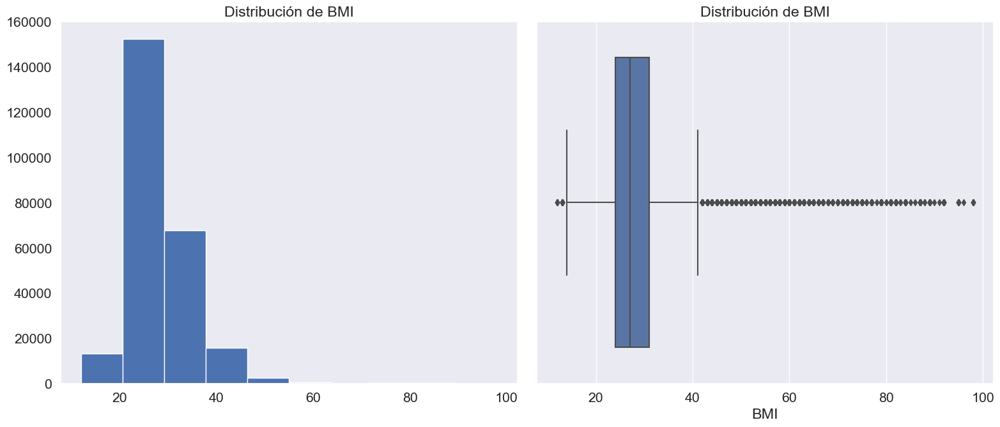
Interpretación de Variables Númericas:
Los datos muestran que la variable MentHlth presenta una distribución fuertemente sesgada a la derecha (skewness = 2.72) con una kurtosis elevada (6.44), indicando:
Una concentración extrema de valores bajos (cerca de 0 días).
Una larga cola hacia valores altos.
Presencia significativa de outliers, como evidencia el boxplot. Esta distribución sugiere que la mayoría de la población reporta pocos o ningún día de afectación mental, mientras que un pequeño grupo muestra afectación persistente.
La variable PhysHlth también muestra sesgo positivo (skewness = 2.21) pero con una kurtosis menos pronunciada (3.5), lo que revela:
Similar concentración en valores bajos.
Cola derecha menos extrema que MentHlth.
Menor cantidad de outliers extremos.
Los datos muestran que la variable BMI presenta una distribución fuertemente sesgada a la derecha (skewness = 2.12) con una kurtosis muy elevada (11.0), lo que indica:
Una concentración extrema de valores en el rango bajo a moderado (probablemente entre 20-30).
Una cola derecha muy larga que se extiende hacia valores altos de BMI.
Presencia significativa de outliers extremos en los valores superiores.
Esta distribución sugiere que:
La mayoría de la población tiene valores de BMI dentro del rango normal o ligeramente elevado.
Existe un grupo más pequeño pero significativo con obesidad moderada.
Un grupo muy reducido presenta valores extremadamente altos (obesidad mórbida).
La kurtosis excepcionalmente alta (11.0 vs 3.5 en PhysHlth) indica que:
Los datos están mucho más concentrados alrededor de la media que en una distribución normal.
Las colas son más pesadas de lo esperado.
Los outliers son más extremos que en otras variables de salud analizadas.
Comparado con MentHlth y PhysHlth:
El sesgo es similar pero ligeramente menos pronunciado.
La kurtosis es notablemente más alta, mostrando mayor concentración en valores centrales.
Los outliers parecen ser más extremos en BMI que en las variables de salud mental/física, debido a que en las variables de percepción el rango va desde 0 a 30 días del mes, en cambio el BMI no tiene limite.
En estos casos podemos realizar una transformación logarítmica que puede ayudar en la normalización, por lo que esta variable puede mantener la escala estándar con otras variables.
Análisis Bivariado#
Se generan graficos de barras para analizar la relación entre un conjunto de variables binarias y la presencia de diabetes con el fin de identificar qué variables binarias están asociadas a mayores proporciones de diabetes en el conjunto de datos.
sns.set(font_scale=1.4)
plt.figure(figsize=(16, 7 * 5))
for i, col in enumerate(binarias, 1):
plt.subplot(5, 3, i)
sns.barplot(
x=col,
y='Diabetes_binary',
data=df,
palette='pastel',
errorbar=None
)
plt.title(f'Diabetes vs {col}')
plt.ylabel('Proporción con Diabetes')
plt.tight_layout()
plt.show()
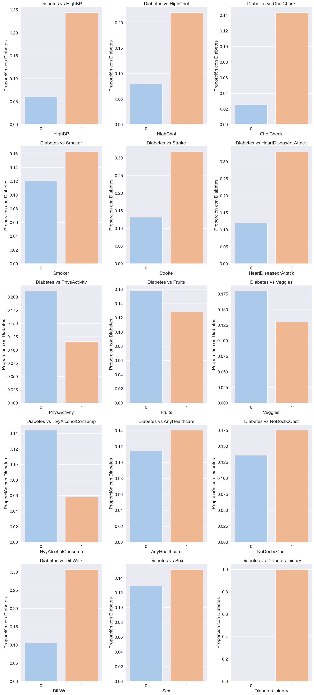
Interpretación:
Los resultados visualizados muestran que la proporción de personas con diabetes es notablemente mayor en aquellos que presentan condiciones crónicas como hipertensión, colesterol alto, enfermedades cardiovasculares, antecedentes de derrame cerebral y dificultades físicas para caminar. Esta tendencia sugiere una fuerte asociación entre la diabetes y la presencia de otras enfermedades no transmisibles. Además, se observa que ciertos comportamientos y estilos de vida, como la inactividad física y el consumo de tabaco, también están relacionados con una mayor prevalencia de diabetes. Por otro lado, factores como la actividad física regular y una alimentación con frutas y verduras parecen asociarse con una menor proporción de personas con diabetes. Finalmente, las barreras económicas y el acceso limitado a servicios de salud también muestran una posible relación con una mayor proporción de casos, lo cual resalta la importancia del contexto socioeconómico en el manejo y prevención de esta enfermedad. En conjunto, los gráficos evidencian que la diabetes no solo está influenciada por condiciones médicas, sino también por determinantes sociales y conductuales de la salud.
Se generan graficos de barras para analizar la relación entre variables categóricas y la presencia de diabetes en la población estudiada. Con el fin de identificar qué categorías dentro de cada variable presentan mayores proporciones de diabetes, lo que podría indicar posibles factores de riesgo asociados.
sns.set(font_scale=1.4)
for col in categoricas:
plt.figure(figsize=(16, 7))
sns.barplot(
x=col,
y='Diabetes_binary',
data=df,
palette='pastel',
errorbar=None
)
plt.title(f'Diabetes vs {col}')
plt.ylabel('Proporción con Diabetes')
plt.tight_layout()
plt.show()
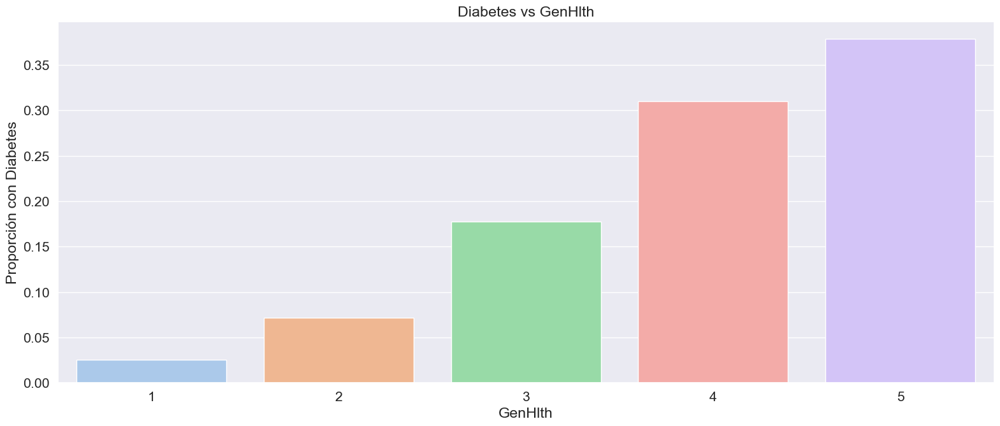
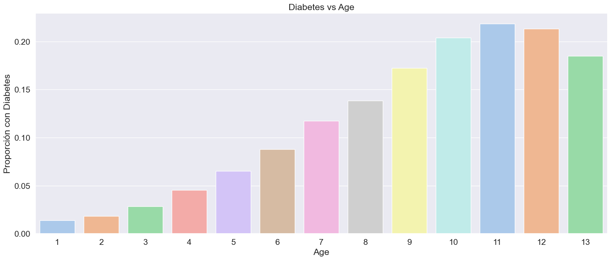
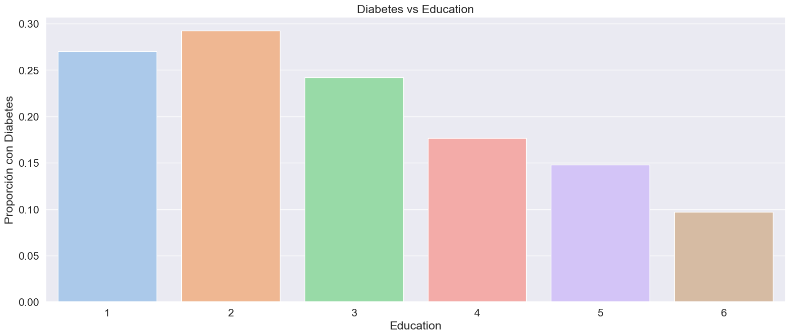
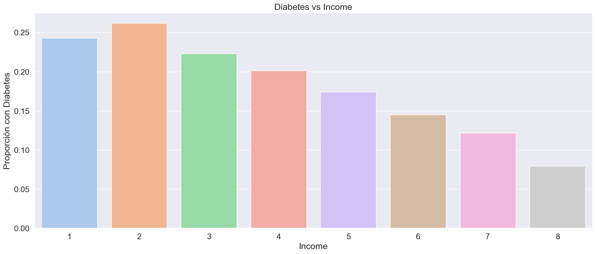
Interpretación:
Los resultados muestran una relación clara entre la proporción de personas con diabetes y diversas variables sociodemográficas. En cuanto al estado general de salud percibido GenHlth, se observa que a medida que las personas reportan una peor salud (del valor 1 al 5), la proporción de casos de diabetes aumenta progresivamente, lo que indica una fuerte asociación entre la autopercepción negativa de la salud y la presencia de diabetes. En relación con la Age, los datos revelan una tendencia ascendente en la proporción de diabetes conforme se avanza en los grupos etarios, alcanzando su punto máximo en los grupos de mayor edad, lo que sugiere que la diabetes es más común en adultos mayores. Por otro lado, los niveles de Education muestran una tendencia inversa: las personas con menor nivel educativo presentan una mayor proporción de diabetes, mientras que a mayor nivel educativo, esta proporción disminuye gradualmente. Esta misma tendencia se refleja en los niveles de Income, donde las personas con ingresos más bajos muestran una mayor prevalencia de diabetes en comparación con aquellas que pertenecen a grupos de ingresos más altos. En conjunto, estos resultados evidencian la influencia significativa de factores sociales como la edad, la educación, el ingreso económico y la percepción de salud en la prevalencia de la diabetes, resaltando la importancia de abordar esta enfermedad desde un enfoque multidimensional..
Se visualiza la asociación entre variables numéricas y la diabetes. Los gráficos combinan barras (proporción de diabetes por categoría) y una línea de tendencia (roja), permitiendo identificar patrones o relaciones monotónicas entre las variables y la variable objetivo.
sns.set(font_scale=1.4)
for col in numericas:
if (col != "BMI"):
plt.figure(figsize=(16, 7))
sns.barplot(
x=col,
y='Diabetes_binary',
data=df,
palette='pastel',
errorbar=None
)
sns.lineplot(
x=col,
y='Diabetes_binary',
data=df,
color='red',
sort=True
)
plt.title(f'Diabetes vs {col}')
plt.ylabel('Proporción con Diabetes')
plt.tight_layout()
plt.show()
plt.figure(figsize=(16, 7))
sns.lineplot(
x='BMI',
y='Diabetes_binary',
data=df,
color='red',
estimator='mean',
errorbar=None
)
plt.title('Diabetes vs BMI')
plt.ylabel('Proporción con Diabetes')
plt.tight_layout()
plt.show()
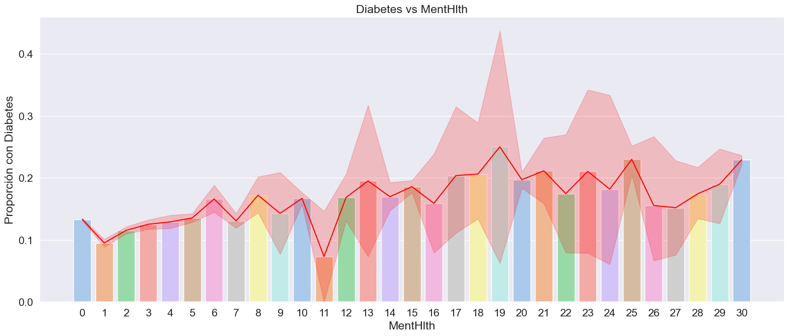
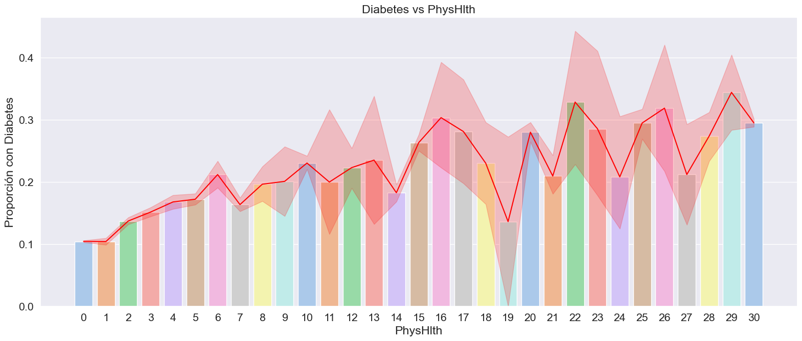
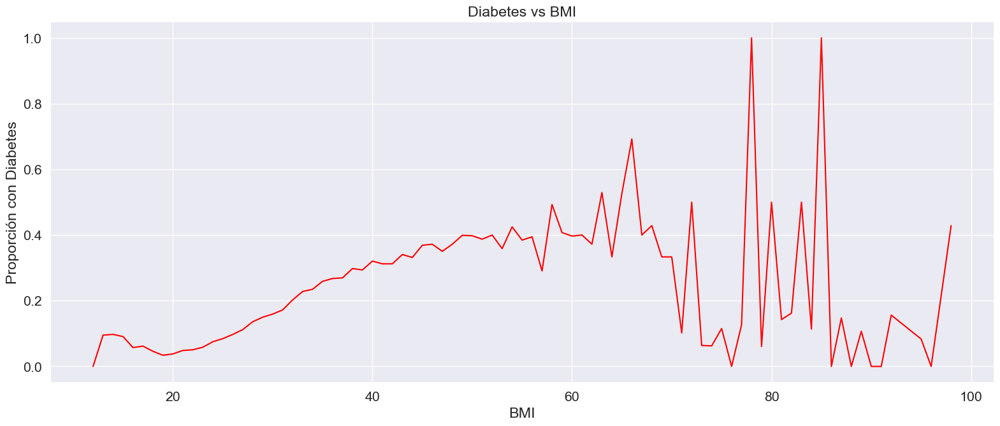
Interpretación:
Los gráficos muestran la relación entre la salud mental MentHith y física PhysHith con la proporción de casos de diabetes. En ambos casos, se observa una tendencia clara: a medida que empeora el estado de salud (aumentan los valores en los ejes horizontales), la proporción de personas con diabetes incrementa. Para la salud mental, la línea de tendencia roja presenta un ascenso sostenido, aunque con cierta variabilidad en los valores intermedios, lo que sugiere que los días con mayor afectación mental están asociados a una mayor prevalencia de diabetes. Por otro lado, en la salud física, la tendencia es más marcada y consistente, especialmente en los valores más altos, indicando una fuerte correlación entre el deterioro físico y la presencia de diabetes. Estos resultados refuerzan la hipótesis de que tanto la salud mental como física están vinculadas al riesgo de diabetes, siendo el impacto particularmente evidente en estados de salud más críticos.
El gráfico de la relación entre el BMI y la presencia de diabetes muestra un comportamiento poco claro para valores superiores a 60 BMI. Esta inconsistencia se debe a la escasez de muestras en dicho rango, lo que provoca cambios bruscos en la proporción de casos con diabetes. Por ejemplo, en un valor específico de BMI podría registrarse que el 100% de las pocas muestras tienen diabetes, mientras que en el siguiente valor (igualmente extremo) la proporción caería abruptamente a 0%. Este fenómeno refleja una la alta variabilidad en regiones con baja densidad de muestras, lo que dificulta la interpretación de tendencias.
Para evaluar la tendencia entre las variables númericas y la prevalencia de diabetes de manera más clara se implementó un análisis basado en categorización de rangos.
# Diccionario con bins y labels para cada variable
config_categorias = {
"BMI": {
"bins": [0, 17, 18, 19, 26, 31, 36, 41, 100],
"labels": ['(0,16]', '(16,17]', '(17,19]', '(19,25]', '(25,30]', '(30,35]', '(35,40]', '(40,100]']
},
"MentHlth": {
"bins": [-1, 6, 11, 16, 21, 26, 31],
"labels": ['[0,5]', '(5,10]', '(10,15]', '(15,20]', '(20,25]', '(25,30]']
},
"PhysHlth": {
"bins": [-1, 6, 11, 16, 21, 26, 31],
"labels": ['[0,5]', '(5,10]', '(10,15]', '(15,20]', '(20,25]', '(25,30]']
}
}
for col in numericas:
# Obtener bins y labels para la columna actual
bins = config_categorias[col]["bins"]
labels = config_categorias[col]["labels"]
# Calcular los grupos directamente con pd.cut() sin almacenar en el DataFrame
grupos = pd.cut(df[col], bins=bins, labels=labels)
# Calcular el porcentaje de diabetes
diabetes_percent = df.groupby(grupos)['Diabetes_binary'].mean() * 100
# Crear el gráfico
plt.figure(figsize=(16, 7))
diabetes_percent.plot(kind='bar', color='skyblue')
plt.title(f'Diabetes vs {col}')
plt.ylabel('Porcentaje con diabetes (%)')
plt.xticks(rotation=0)
plt.show()
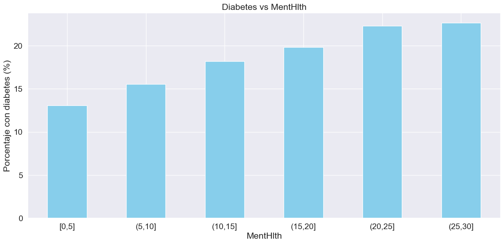
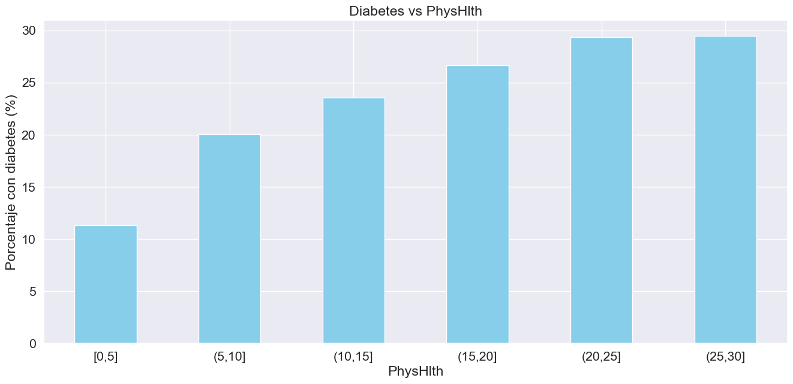
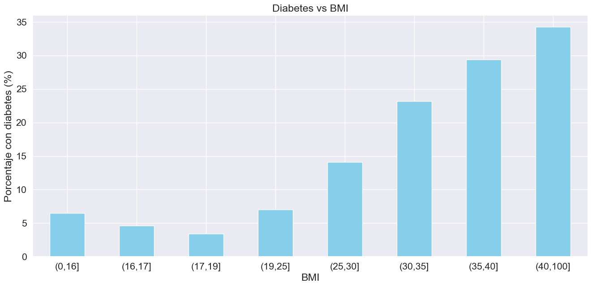
Interpretación:
Estos gráficos corroboran claras asociaciones entre la diabetes y diversos factores relacionados con la salud física, mental y el Índice de Masa Corporal.
En primer lugar, se evidencia una relación directa entre el deterioro de la salud mental y el aumento en la proporción de personas con diabetes. A medida que se incrementan los días con problemas de salud mental, también aumenta el porcentaje de personas con diagnóstico de diabetes, lo que sugiere una posible interacción entre el bienestar psicológico y el desarrollo o manejo de esta enfermedad.
De manera similar, la salud física también muestra una tendencia marcada: las personas que reportan más días con limitaciones físicas o problemas de salud presentan una mayor prevalencia de diabetes. Esto podría indicar que la diabetes tiende a coexistir con otras condiciones físicas crónicas o que su presencia contribuye al deterioro del estado físico general.
Finalmente, el índice de masa corporal (IMC) muestra una relación especialmente clara: a medida que el IMC aumenta, también lo hace el porcentaje de personas con diabetes. Las tasas más altas se encuentran en los grupos con obesidad severa, lo que refuerza la fuerte asociación entre el exceso de peso y el riesgo de desarrollar diabetes.
Análisis Multivariado#
Para identificar relaciones lineales entre las variables del Dataset, se generó una matriz de correlación mediante un heatmap. Este gráfico muestra el coeficiente de correlación de Pearson (rango: -1 a 1) entre cada par de variables, utilizando una escala de colores (azul para correlaciones negativas, rojo para positivas). Los valores numéricos anotados permiten evaluar posibles dependencias entre variables.
sns.set(font_scale=1.4)
plt.figure(figsize=(20, 20))
sns.heatmap(
df.corr(),
annot=True,
fmt=".2f",
cmap="coolwarm",
vmin=-1, vmax=1,
linewidths=0.5
)
plt.title("Matriz de Correlación")
plt.tight_layout()
plt.show()
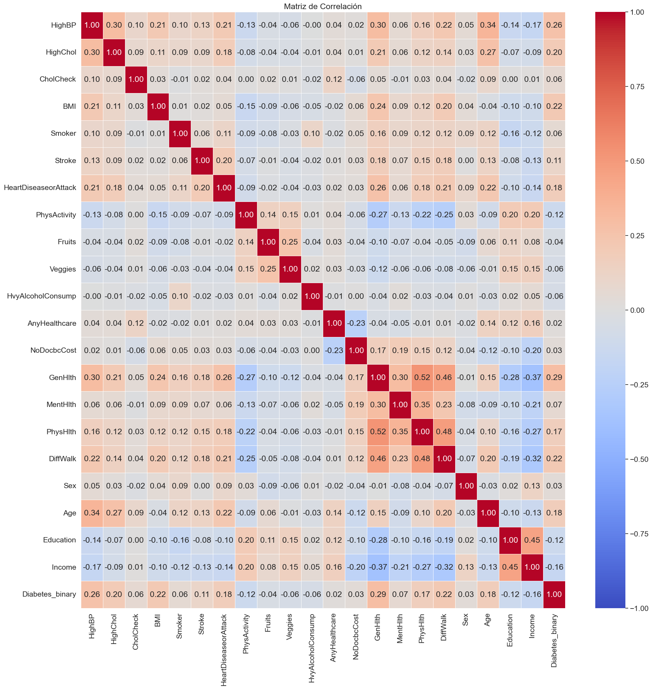
Interpretación:
El análisis de la matriz de correlación revela patrones clave entre las variables y su asociación con la diabetes (Diabetes_binary). Se destacan las siguientes observaciones:
Variables con mayor correlación positiva con diabetes:
Presión arterial alta
HighBP(0.26) y índice de masa corporalBMI(0.22) muestran una asociación moderada pero significativa, lo que sugiere que estos factores están vinculados a un mayor riesgo de diabetes.Salud general autopercibida
GenHith(0.29) y dificultad para caminarDiffWalk(0.22) también presentan correlaciones positivas, indicando que un peor estado de salud físico y movilidad reducida pueden estar relacionados con la presencia de diabetes.
Variables con correlaciones negativas:
Actividad física
PhysActivity(-0.12), nivel educativoEducation(-0.12) y nivel de ingresosIncome(-0.16) muestran una relación inversa débil con diabetes, lo que apunta a que estilos de vida más activos, mayores niveles educativos y recursos económicos podrían asociarse a menor prevalencia de la enfermedad.
Relaciones entre variables predictoras:
GenHithestá fuertemente correlacionada conPhysHith0.52 yDiffWalk0.46, lo que refleja una interconexión entre salud física, movilidad y percepción general de salud.EducationeIncomepresentan una correlación positiva entre sí (0.45), sugiriendo que factores socioeconómicos podrían influir en conjunto en los resultados de salud.
Correlaciones débiles o nulas:
Variables como
AnyHealthcare,NoDocbcCostoSexmuestran asociaciones cercanas a cero con diabetes, indicando que su impacto directo es marginal según estos datos.
A continuación hallamos el VIF el cual determina la fuerza de la correlación entre las variables independientes. Se pronostica tomando una variable y comparándola con todas las demás. La puntuación VIF de una variable independiente representa hasta qué punto la variable se explica por otras variables independientes.
Un valor
VIF de 1: Sin multicolinealidad (variable perfectamente independiente).Un valor
VIF entre 1 y 5: Multicolinealidad baja a moderada (no se considera problemática).Un valor
VIF entre 5 y 10: Multicolinealidad moderada a alta (considerada problemática).Un valor
VIF superior a 10: Multicolinealidad alta (preocupación grave, requiere medidas).
from statsmodels.stats.outliers_influence import variance_inflation_factor
def VIF_calculation(X):
VIF = pd.DataFrame()
VIF["variable"] = X.columns
VIF["VIF"] = [variance_inflation_factor(X.values, i) for i in range(X.shape[1])]
VIF = VIF.sort_values('VIF', ascending=False).reset_index(drop = True)
return(VIF)
VIF_mat = VIF_calculation(X)
display(VIF_mat)
| variable | VIF | |
|---|---|---|
| 0 | Education | 29.507416 |
| 1 | CholCheck | 23.187436 |
| 2 | AnyHealthcare | 20.839710 |
| 3 | BMI | 18.149913 |
| 4 | Income | 14.156118 |
| 5 | GenHlth | 10.740162 |
| 6 | Age | 9.886830 |
| 7 | Veggies | 5.826886 |
| 8 | PhysActivity | 4.645314 |
| 9 | Fruits | 3.032775 |
| 10 | HighBP | 2.299761 |
| 11 | HighChol | 2.029660 |
| 12 | PhysHlth | 1.999556 |
| 13 | Smoker | 1.933042 |
| 14 | Sex | 1.910708 |
| 15 | DiffWalk | 1.838551 |
| 16 | MentHlth | 1.463103 |
| 17 | HeartDiseaseorAttack | 1.289820 |
| 18 | NoDocbcCost | 1.215834 |
| 19 | Stroke | 1.126777 |
| 20 | HvyAlcoholConsump | 1.083523 |
Interpretación:
Los valores de VIF obtenidos indican la presencia de multicolinealidad entre las variables predictoras del modelo. Se observa que las variables Education, CholCheck y AnyHealthcare presentan los valores de VIF más elevados (29.51, 23.19 y 20.84, respectivamente), lo que sugiere una fuerte dependencia lineal con otras variables del modelo. Estos resultados superan ampliamente el umbral crítico de VIF = 5, e incluso el más estricto de VIF = 10, lo que implica que la multicolinealidad podría estar inflando la varianza de los coeficientes de regresión y, por ende, afectando la estabilidad e interpretación del modelo. Variables como BMI, Income y GenHlth también muestran valores preocupantes (18.15, 14.16 y 10.74), aunque en menor grado.
En contraste, las variables restantes (como Veggies, PhysActivity, HighBP, HighChol y aquellas con VIF < 5) no presentan multicolinealidad significativa, lo que indica que aportan información independiente al modelo. Especialmente, variables como HvyAlcoholConsump, Stroke y NoDocbcCost (VIF < 1.3) son prácticamente libres de redundancia.
Estos hallazgos resaltan la necesidad de depurar el modelo para garantizar estimaciones robustas y evitar conclusiones sesgadas.
Construcción de Pipelines#
La construcción de pipelines constituye una herramienta fundamental para garantizar procesos de análisis ordenados, reproducibles y eficientes. Un pipeline permite encadenar de manera estructurada todas las etapas del flujo de trabajo, desde la preparación de los datos (limpieza, transformación y selección de variables) hasta la aplicación de algoritmos de modelado y la evaluación de resultados. Esta integración facilita la automatización, reduce el riesgo de errores y asegura que el mismo procedimiento pueda aplicarse a nuevos conjuntos de datos con consistencia. Además, los pipelines son especialmente útiles cuando se combinan con técnicas de validación cruzada y búsqueda de hiperparámetros, ya que permiten optimizar el desempeño de los modelos dentro de un marco sistemático y escalable.
Construcción del Preprocesador Central con ColumnTransformer#
Para integrar de manera segura y eficiente todas las transformaciones de preprocesamiento en un flujo único y reproducible, se construye un ColumnTransformer. Este objeto es el núcleo del pipeline, ya que permite aplicar diferentes transformaciones a subconjuntos específicos de columnas, garantizando que cada paso se ejecute en el orden correcto y sin fugas de información (data leakage) durante la validación cruzada.
La configuración del preprocesador especifica dos transformaciones en paralelo:
Escalado estandarizado para variables numéricas continuas.
Codificación one-hot con eliminación de la primera categoría para evitar multicolinealidad en las variables categóricas.
preprocessor = ColumnTransformer(
transformers=[
('num', StandardScaler(), numericas),
('cat', OneHotEncoder(drop='first'), categoricas)
]
)
Construcción de Pipeline para el Modelo de Clasificación#
Para cumplir con el objetivo de integrar un flujo completo de machine learning, se construyen un pipeline para el algoritmo clasificación (Regresión Logística). Un pipeline encapsula de manera secuencial y automatizada todas las etapas del proceso de modelado, desde el preprocesamiento de los datos hasta la ejecución del algoritmo de aprendizaje. Esto garantiza que cada transformación se aplique de manera consistente durante el entrenamiento y la predicción, eliminando el riesgo de data leakage y asegurando la reproducibilidad de los resultados.
preprocessor: La transformación de características definida previamente en el ColumnTransformer, que se encarga de escalar las variables numéricas y codificar las categóricas.model: El estimador o algoritmo de machine learning que aprenderá a predecir la diabetes a partir de las características transformadas.
Regresión Logística: Proporciona un modelo lineal base para la tarea de clasificación binaria (predecir diatetes/prediabetes), cuya optimización se controla con el hiperparámetro de regularización C.
pipeline_logreg = Pipeline([
('preprocessor', preprocessor),
('model', LogisticRegression(max_iter=1000))
])
Entrenamiento y Ajuste#
Durante el entrenamiento, el algoritmo ajusta sus parámetros internos en función de los ejemplos disponibles, minimizando el error entre las predicciones y los valores reales. Posteriormente, el ajuste implica la selección de los mejores hiperparámetros mediante técnicas como la validación cruzada o la búsqueda en malla, con el fin de mejorar la capacidad predictiva del modelo y evitar problemas como el sobreajuste o el subajuste. Este proceso garantiza que el modelo no solo funcione adecuadamente con los datos de entrenamiento, sino que también tenga un buen desempeño al generalizar en nuevos escenarios.
Configuración de la Búsqueda de Hiperparámetro con GridSearchCV#
Para optimizar el rendimiento del modelo y encontrar la mejor combinación de hiperparámetro, se configura una búsqueda exhaustiva mediante GridSearchCV. Esta estrategia prueba de manera sistemática todas las combinaciones de los valores especificados, utilizando validación cruzada para evaluar de forma robusta el desempeño de cada configuración.
Se implementa la estrategia de validación cruzada:
StratifiedKFoldpara el problema de clasificación, que garantiza que cada fold tenga aproximadamente la misma proporción de la variable objetivo, crucial para conjuntos desbalanceados.
Además, se define la métrica de evaluación:
accuracypara clasificación, que mide la proporción de predicciones correctas.
El hiperparámetro a optimizar es:
Cpara Regresión Logística, que controla la inversa de la fuerza de la regularización.
cv_clf = StratifiedKFold(n_splits=5, shuffle=True, random_state=42)
grid_logreg = GridSearchCV(
estimator=pipeline_logreg,
param_grid={'model__C': [0.01, 0.1, 1, 10, 100]},
cv=cv_clf,
scoring='accuracy'
)
Ejecución de la Búsqueda de Hiperparámetro y Entrenamiento del Modelo#
Una vez configurado el pipeline y la estrategia de búsqueda, se procede a ejecutar el entrenamiento del modelo. Este paso es donde se implementa de manera práctica el flujo completo de machine learning definido teóricamente. El método fit() de cada objeto GridSearchCV no solo entrena el modelo final con la mejor combinación de hiperparámetro encontrada, sino que realiza de manera automatizada y segura todo el proceso de validación cruzada, preprocesamiento y optimización.
grid_logreg.fit(X, y)
GridSearchCV(cv=StratifiedKFold(n_splits=5, random_state=42, shuffle=True),
estimator=Pipeline(steps=[('preprocessor',
ColumnTransformer(transformers=[('num',
StandardScaler(),
['MentHlth',
'PhysHlth',
'BMI']),
('cat',
OneHotEncoder(drop='first'),
['GenHlth',
'Age',
'Education',
'Income'])])),
('model',
LogisticRegression(max_iter=1000))]),
param_grid={'model__C': [0.01, 0.1, 1, 10, 100]},
scoring='accuracy')In a Jupyter environment, please rerun this cell to show the HTML representation or trust the notebook. On GitHub, the HTML representation is unable to render, please try loading this page with nbviewer.org.
GridSearchCV(cv=StratifiedKFold(n_splits=5, random_state=42, shuffle=True),
estimator=Pipeline(steps=[('preprocessor',
ColumnTransformer(transformers=[('num',
StandardScaler(),
['MentHlth',
'PhysHlth',
'BMI']),
('cat',
OneHotEncoder(drop='first'),
['GenHlth',
'Age',
'Education',
'Income'])])),
('model',
LogisticRegression(max_iter=1000))]),
param_grid={'model__C': [0.01, 0.1, 1, 10, 100]},
scoring='accuracy')Pipeline(steps=[('preprocessor',
ColumnTransformer(transformers=[('num', StandardScaler(),
['MentHlth', 'PhysHlth',
'BMI']),
('cat',
OneHotEncoder(drop='first'),
['GenHlth', 'Age',
'Education', 'Income'])])),
('model', LogisticRegression(max_iter=1000))])ColumnTransformer(transformers=[('num', StandardScaler(),
['MentHlth', 'PhysHlth', 'BMI']),
('cat', OneHotEncoder(drop='first'),
['GenHlth', 'Age', 'Education', 'Income'])])['MentHlth', 'PhysHlth', 'BMI']
StandardScaler()
['GenHlth', 'Age', 'Education', 'Income']
OneHotEncoder(drop='first')
LogisticRegression(max_iter=1000)
Análisis del Resultado de la Búsqueda de Hiperparámetro#
Tras completar el proceso de búsqueda exhaustiva, se extrae y analiza el resultado óptimo para el modelo. Esta etapa es crucial para identificar la configuración de hiperparámetro que maximiza el rendimiento. El resultados se presenta mostrando la mejor combinación de parámetros encontrada y su score de validación cruzada correspondiente.
print("Mejor LogReg:", grid_logreg.best_params_, "Score (Accuracy):", grid_logreg.best_score_)
Mejor LogReg: {'model__C': 1} Score (Accuracy): 0.8619362976978872
Interpretación
El proceso de optimización mediante Grid Search identificó que el mejor modelo de Regresión Logística se obtiene con los siguientes parámetros:
Parámetro Óptimo Identificado:
C = 1: Este valor indica un nivel moderado de regularización, donde el modelo busca un equilibrio entre el ajuste a los datos y la generalización. Si bien es una configuración sólida, su simplicidad sugiere que existe espacio para modelos más complejos.
Rendimiento Actual del Modelo:
Accuracy Score: 86.19% Si bien este resultado representa un punto de partida aceptable, evidencia una oportunidad significativa de mejora:
Un 13.81% de error indica que aproximadamente 1 de cada 7 predicciones es incorrecta.
Este nivel de precisión, aunque útil como base, no es suficientemente robusto para aplicaciones críticas.
La brecha del 13.81% representa un margen de mejora sustancial que justifica explorar modelos más sofisticados.
El resultado actual señala claramente la necesidad de implementar modelos más avanzados para alcanzar los niveles de precisión requeridos en aplicaciones productivas.
Evaluación de desempeño#
La evaluación de desempeño es una etapa fundamental en el desarrollo de modelos de machine learning, ya que permite medir qué tan bien se ajusta el modelo a los datos y, sobre todo, qué capacidad tiene para generalizar en situaciones no vistas. A través de métricas específicas (que varían según si se trata de un problema de regresión o de clasificación) es posible identificar fortalezas y debilidades del modelo, así como comparar diferentes enfoques y versiones durante el proceso de experimentación. Además de las métricas numéricas, las visualizaciones como matrices de confusión, curvas ROC o gráficos de predicciones frente a valores reales ofrecen una perspectiva más clara sobre el rendimiento alcanzado. De esta manera, la evaluación del desempeño no solo valida la efectividad del modelo, sino que también orienta la toma de decisiones para su mejora continua.
Creación del Conjunto de Entrenamiento y Prueba#
Para evaluar de manera rigurosa y justa el desempeño final del modelo optimizado, es esencial probarlo en datos que no hayan sido vistos durante el proceso de ajuste de hiperparámetro. Por esta razón, se divide el dataset en subconjuntos de entrenamiento y prueba. El conjunto de entrenamiento (X_train, y_train) se utilizará para reentrenar el mejor modelo encontrado por GridSearchCV con todos los datos disponibles de entrenamiento, mientras que el conjunto de prueba (X_test, y_test) se reservará exclusivamente para la evaluación final, proporcionando una estimación no sesgada del rendimiento del modelo en datos nuevos.
Se divide las features (X) y la variable objetivo binaria (y), utilizando el parámetro stratify para garantizar que la proporción de las clases Diabetes_binary se mantenga igual en ambos conjuntos, preservando así el balance original.
Un 20% de los datos se asigna para prueba en ambos casos, utilizando una semilla (random_state=42) para asegurar la reproducibilidad de la partición.
X_train_clf, X_test_clf, y_train_clf, y_test_clf = train_test_split(
X, y, test_size=0.2, stratify=y, random_state=42
)
Evaluación Final del Modelo de Clasificación en el Conjunto de Prueba#
Para completar el análisis del objetivo de clasificación binaria, se evaluó el desempeño del mejor modelo de Regresión Logística identificado mediante GridSearchCV en el conjunto de prueba reservado para esta tarea. La evaluación de un modelo de clasificación requiere un análisis más multidimensional que la regresión, ya que es necesario considerar no solo la capacidad de predicción general (accuracy) sino también el equilibrio entre los diferentes tipos de error (falsos positivos y falsos negativos), lo cual es crucial dependiendo del contexto de aplicación.
El modelo se reentrenó con la totalidad del conjunto de entrenamiento de clasificación (X_train_clf, y_train_clf) y se generaron tanto predicciones de clase (predict) como probabilidades (predict_proba) para el conjunto de prueba. El desempeño se evaluó mediante un conjunto exhaustivo de métricas y visualizaciones:
Métricas de Evaluación:
Accuracy: Proporción general de predicciones correctas.
Precision: Capacidad del modelo de evitar falsos positivos.
Recall: Capacidad del modelo de evitar falsos negativos.
F1-score: Media armónica entre Precision y Recall, ideal para conjuntos balanceados.
Visualizaciones:
Matriz de Confusión: Muestra de forma explícita los aciertos (diagonal) y los errores (falsos positivos y falsos negativos) del modelo.
Curva ROC y AUC: Evalúa la capacidad del modelo para distinguir entre clases a través de todos los posibles umbrales de clasificación. Un AUC de 0.5 representa un modelo aleatorio, mientras que 1.0 representa una separación perfecta.
best_logreg = grid_logreg.best_estimator_
best_logreg.fit(X_train_clf, y_train_clf)
y_pred_clf = best_logreg.predict(X_test_clf)
y_pred_proba = best_logreg.predict_proba(X_test_clf)[:,1]
acc = accuracy_score(y_test_clf, y_pred_clf)
prec = precision_score(y_test_clf, y_pred_clf)
rec = recall_score(y_test_clf, y_pred_clf)
f1 = f1_score(y_test_clf, y_pred_clf)
print("Evaluación Logistic Regression")
print("Accuracy:", acc)
print("Precision:", prec)
print("Recall:", rec)
print("F1-score:", f1)
cm = confusion_matrix(y_test_clf, y_pred_clf)
sns.heatmap(cm, annot=True, fmt="d", cmap="Blues", xticklabels=["no diabetes","prediabetes or diabetes"], yticklabels=["no diabetes","prediabetes or diabetes"])
plt.xlabel("Predicción")
plt.ylabel("Real")
plt.title("Matriz de confusión")
plt.show()
fpr, tpr, _ = roc_curve(y_test_clf, y_pred_proba)
roc_auc = auc(fpr, tpr)
plt.plot(fpr, tpr, label=f'AUC = {roc_auc:.2f}')
plt.plot([0,1],[0,1],'r--')
plt.xlabel("False Positive Rate")
plt.ylabel("True Positive Rate")
plt.title("Curva ROC")
plt.legend(loc="lower right")
plt.show()
Evaluación Logistic Regression
Accuracy: 0.8599416587827183
Precision: 0.4852354349561053
Recall: 0.08600933653982176
F1-score: 0.1461187214611872
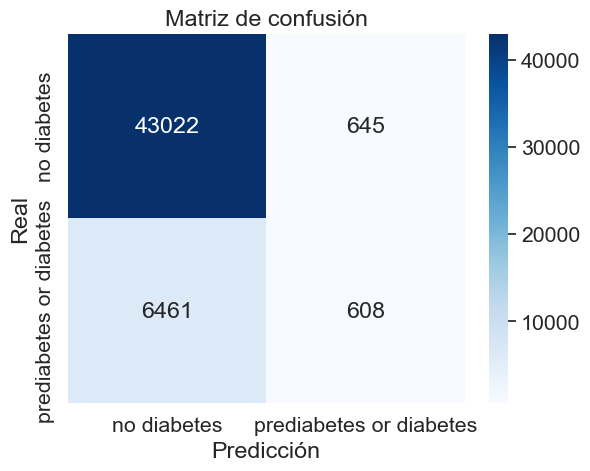
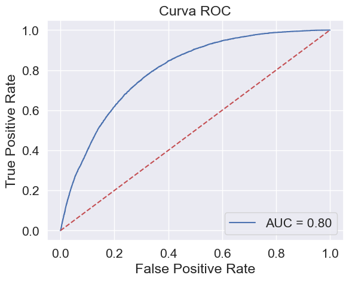
Interpretación
El modelo de Regresión Logística muestra un panorama mixto que revela importantes oportunidades de optimización:
Accuracy: 85.99% Esta métrica superficialmente sugiere un buen desempeño, pero enmascara graves deficiencias en la capacidad predictiva real del modelo.
Problemas Críticos Identificados:
Precision: 48.52%: Cuando el modelo predice positivo, solo acierta la mitad de las veces (casi equivalente a lanzar una moneda).
Recall: 8.60%: Solo detecta el 8.6% de los casos positivos reales, perdiendo más del 91% de los verdaderos positivos.
F1-score: 14.61%: La métrica balanceada confirma el desempeño extremadamente pobre en la clase minoritaria.
Diagnóstico del Modelo: El modelo presenta un fuerte sesgo hacia la clase mayoritaria, prediciendo en la mayoria de los casos la clase negativa, pero falla completamente en identificar los patrones de la clase positiva.
Estos resultados no representan el potencial real de machine learning para este problema. El bajo F1-score indica que tenemos un margen de mejora del más del 85% con las estrategias adecuadas, lo que vuelve obligatorio el uso de modelos más avanzados y técnicas específicas para datos desbalanceados.